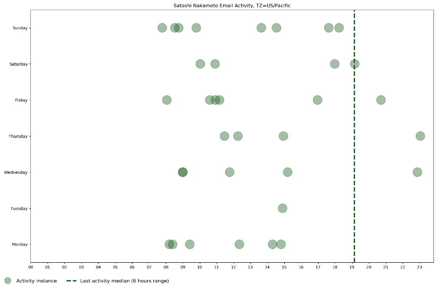

比特币研究：寻找中本聪系列【七】——是一个人还是一个团队
特邀作者：祝维沙，知名华人企业家

7.1 一个人实现的设计和编程
比特币的代码最初第一版只有大约16000行代码，（1）也有说2万行的。一个优秀的程序员，用C++可以一天完成300-500行完整代码，大概需要40-60天。从代码量来看属于一个人的任务。
拉斯洛（Laszlo）是中本聪早年的代码贡献者，人称“大饼哥”，是2010年5月22日花1万比特币买了两个比萨的人。他认为比特币是头脑风暴的产物，他问过中本聪这个问题。
拉斯洛问：“聪，你在这个设计上花了多长时间？它似乎是经过深思熟虑的，不是那种没有经过大量的头脑风暴和讨论就坐下来编码的程序。大家都自然想程序应该有问题而去寻找漏洞，但它很完整。”
中本聪：“从2007年开始。 在 某个时点，我一下确信有一种方法可以做到这一点，而无需任何信任，便不禁一直思考这个问题。 更多的工作是设计而不是编码。”
“幸运的是，到目前为止，所有提出的问题都是我之前考虑和计划的。”（2）
注意这里中本聪用的是单数人称。也就是程序是一个人设计开发的，设计时间多过编码，也与代码量吻合。
比特币开发出来后，中本聪担当客服，从对话的内容来看就是一个人。这点通过唐乔·卡拉瓦诺夫（Doncho Karaivanov）对中本聪发帖的作息时间也可以证实。（3）在该文章所附的散点图中可以清楚地表明中本聪的作息时间规律，这是一个全球项目，如果不是一个人，上下班的客服规律会更清晰。图1清楚地反映了中本聪的作息。
后期的工作量是很大的。2010年7月16日回答了25个帖。从0：44到2：43回答了3个帖，从14：46到22：20回答了22个帖。中间的休息规律始终保持。

图1 是邮件时间图
比特币早期是“空气”币，雇人替他发帖就要花钱和中心化系统差不多，在讨论大卫乔乔姆的数字现金e-Cash项目时，大卫的项目是中心化的，资金链断了就倒闭了。中本聪作为问题评价过大卫乔姆的项目，说他的项目优点是不会倒闭。雇人不是他的选项，否则也做不到在维基解密事件发生，仅仅19个小时就能干脆地离开。社区开发都是志愿者，回答问题也是志愿者。所以中本聪的帖子表现出就是一个人。
编程是一个人，是最合理的解释，除了上面的客观证据，早期与中本聪有过邮件接触的人如马尔蒂马尔米（Martti Malmi）等也都认为是一个人。只要认真读过中本聪在论坛的发帖，不难得出是一个人的结论。但是中本聪是不是就是一个人呢？我们在研究中本聪离开时发现了其他的线索。
7.2一个悲剧的离开方式
7.2.1 维基解密触发中本聪的从容离开
中本聪消失的原因是维基解密事件。阿桑奇遭到美国的通缉，2010年12月初金融机构万事达信用卡、Visa信用卡、贝宝(Paypal)切断了对维基解密的捐赠付款。12月10日《PC World》发表了一篇文章，建议可以用比特币付款。引起了中本聪的强烈反弹。（4）
中本聪写道：（5）
“如果在其他场合得到这样的关注就好了。维基解密捅了马蜂窝，结果一大群马蜂朝我们飞来。”
正规金融机构为什么关断付款？因为维基解密涉嫌违法。美国政府管不了维基解密可以管住金融机构。同样的道理，美国政府管不了比特币网络，可以管住中本聪。中本聪的过激反应，恰恰说明了他是美国人。“如果在其他场合得到这样的关注就好了”，这是中本聪的心理活动的表现，2010年5月22日的大饼日，中本聪毫无反应，大饼日是他说的“其它场合”，也就是在正常商业环境的使用，不能涉嫌资助违法项目。他觉得事情闹大了，中本聪对“自由美元”和“电子黄金”的案例是十分清楚的。他考虑后面的法律问题可能接踵而至，只考虑了19个小时就发表了最后一个帖子。（6）
“在DoS（拒绝服务）方面还有很多工作要做，在掉进更复杂想法的漩涡之前，我先把已做完的部分快速发布出来，以备不时之需。这就是版本0.3.19。”
注：“以备不时之需”，也就是中本聪实现为拒绝服务攻击做了预防措施。
“·添加了一些DoS控制。”
“我和加文之前明确说过，本软件对DoS根本没有防御力。这是一个改进，但仍有比我能穷尽的攻击方式更多的情况。”
“把-有限自由中继（limitfreerelay）部分留作开关，如果需要可以使用。”
注：以上都是抵抗拒绝服务攻击所预先做的工作。
“·移除“安全模式”警报。”
“安全模式”警报是0.3.9版溢出错误发生后的临时措施。我们真希望用户能在运行时加上“-禁用安全模式（disablesafemode）”开关，但为了美观还是把它去掉了。本来也没打算将其作为长期功能。安全模式仍然会在较长的（更大的总PoW）无效区块链出现时被触发。”
注：这个安全模式可以被触发，到今天都没有被触发，也就是正常的分叉不会触发。
“新版本下载地址：”
注：发表了最新版本。
两个帖发出只差19个小时。忙了一整天。首先他做了什么？
1. 增加程序安全性的预防措施，
2. 去除中本聪本人可以控制的安全警报程序。
他也删除了自己的版权主张，是当时删的还是后来删的就不知道了（注：我没有找到有关原始资料）。而后通过邮件将比特币程序的上载权交给了加文安德烈森。第一件事是希望比特币系统可以安全运行，后面的事是撇清关系，连版权都不要了，比特币系统与我无关。
这件事发生后，市场有许多推测，大多不靠谱。从事实来看，这是一个突发事件，中本聪所做的事都是为了避免该事件引起对自己不利的后果。即不确定的法律后果。到今天他都不出现，他也许认为今天的法律风险依然存在。中本聪对法律是很敏感的，每个人的法律背景不同受到的伤害不同，他更了解权力的任性，因为他动了政府的奶酪。如果中本聪在中国可能早被抓起来了，至少是限制出境和所有中国区块链大佬一个待遇。他是总头子待遇应该只高不低。
他的离开会带来什么后果？下面是我的分析思考。多少是站在中本聪的角度。
比特币程序经过多次改进，是可以安全运行的，无论他在与不在，都没有人能够关得掉。
抗攻击能力还不完善，需要有人维护。在这一突发事件后，他将维护权交给了加文安德烈森。
7.2.2中本聪离开符合自然进化规则
未来的前景难预料，好坏都有可能。先分析好的一面。
中本聪的离开，加快了社区的进化，比特币进化到BIP提案，早期人员持币多，保证了社区早期进化和成功的可能。
现在看来结果是走向好的一面。比特币设计的机制起到很好的作用。这是人类从未有过的实验，结果令人惊喜。人类可以自然进化，地球也是自然进化。自然进化的最初的驱动力是上帝，无论谁都无法挑战自然进化规律，你的挑战就是自然进化的一部分。一个人工系统在一定条件下也表现了自然进化的特性，自然进化最大的特征是无主，这是中本聪思考的哲学高度和消失的原理。
如果比特币是自然进化，那么中本聪就是上帝。但是这个上帝和中本聪一样也是假的。因为人工系统脱离不了人的干扰，BIP的机制设计就如华盛顿先哲们的机制设计。有了好坏的结果选择，就不完全是自然进化。显然当前的人类强大到可以影响自然的演进。预知这种演进的后果要有模拟实验生态，比特币和区块链是社会学伟大的实验室。社会学尤其是经济学漫长的实践可以由实验室快速验证。作为社会学家尤其是经济学家如果不懂区块链，靠逻辑和实证分析还是前物理学时代的古董。因为物理学靠实验。Luna(UST)算法稳定币的快速的失败，告诉我们一个道理，法币如果没有政府背书还不如算法稳定币。从自然进化的角度，人类社会更像大号的区块链生态。两者都不是纯粹的自然系统，两者很类似。中本聪的离开尽量模仿了自然进化，黄金符合自然进化规则，法币符合吗？所有建立在法币之上的金融学理论还不如算法稳定币的算法明确。到了该大修的时候了。
7.2.3一个伟大的金主给中本聪兜底
从中本聪回复帖子的数量和维护系统的精力看，一个人必须在精力的巅峰状态，已经没有精力专注另一件事。不考虑收入，他也不融资，去不去欧洲都要设立这个项目，只是费用的大小而已。而后运行挖矿程序，两年时间比特币都基本是“空气币”阶段，直到2011年2月才达到1美元。从2007年开始的开发阶段和离开后的日子，他都需要有基本生活费用。如果中本聪是已婚还有孩子了呢？对于一般工薪阶层是很艰难的决定。
从开始直到今天中本聪早年账户基本没动，说明他不缺钱。不缺钱就是说背后有金主，或者自己有其他项目赚钱。从回复帖子的频度来看，同时运行两个大项目的可行性不大，所以背后有金主的可能性很大。背后的金主和他在做一个大决定，因为一旦有事他的早期账户可能都被有关部门监控，每动一个地址账户都可能受到审视。从比特币设计原理看转一个地址账户没有问题，但是变现成法币还是可以追踪。在2011年4月26日加文准备参加一个政府部门的情报会议，他给加文的邮件中表达了担心，认为比特币早被有关当局盯上了。说明他们对此早就知道，是做了长期的打算的。2010年1万个比特币都不值什么钱，他如何生活？在离开前要想好。
请注意在比特币论坛中本聪很少用到“我们”来代表自己。在中本聪白皮书中用了15个“我们We”，一些场合的“We”用法可以理解指的是中本聪自己，另一些场合含有复数的意思。
中本聪给维基百科描述比特币成就的归属，论述非常简洁准确。此人不会贪别人的贡献，相反是“将荣誉更多地归功于其他的贡献者是一个非常好的主意”。中本聪给加文·安德森，2011年4月26日＜satoshin@gmx.com＞。所以白皮书中的“我们”应该真实存在。我原来猜想这个“我们”是本尊和匿名构成。那么这种习惯会在比特币论坛的回复中体现出来。结果在论坛更多的是用“I”，是单数，说明程序是一个人编的。另一个人应该参与了白皮书的创造。他是中本聪后面的神秘人物。此人除了程序上不如中本聪，其他方面不亚于他的学识。而且是他的金主。
从19个小时两帖的间隔时间看，中本聪做了两件事：
1. 与他的金主商量，
2. 然后善后。
中本聪打算快速构建已经做好的东西，然后发布新版。没有再做新东西，说明与金主商量花费了不少时间。这是一个什么金主引起了我的兴趣。
当时的比特币远谈不上成熟，“还有许多DOS（拒绝服务）工作要做”。如果是一个不相干的纯金主，会选择让他冒险。而背后的金主选择保护了他。选择项目即使失败也要保护他，所以金主和他不是一般简单的金钱关系。中本聪消失之后如何生活？其实这种保护一直到了2015年。
除了金主之外，社区的贡献更为重要。社区是自然进化的工具。
中本聪一个早期地址的币都不动代表了信仰，中本聪相信自己的制度设计，相信自己的技术设计，相信自然进化，也相信会有出头的一天。1975年是美国黄金解封的开始，他把生日定在这一年，他期待比特币如1975年黄金的解禁，黄金的拐点到来迎来新生。生日中隐含的盼望解禁的密码，再次证明他是美国人。
一项制度的改变都有机缘，中本聪是信奉自然主义的，信奉哈耶克米塞斯，他在等。机缘可以等来也可能创造出来。博弈的结果取决于概率，我们就是要创造大概率事件。条件是具备的。
总结
比特币是一个人设计编程，背后一个伟大的金主和谋士的鼎力相助，比特币志愿者奉献和不断完善，比特币的壮大是比特币社区的贡献。理解程序开发过程是最简单的，基本没有争论。理解产品的思路就是高一个层次的问题，导致分叉就是对产品发展的理解不同，下一节介绍有关问题。
结论：
中本聪：男，时年33-34岁，神童，美国人，住西海岸，是密码朋克。不缺钱。自由职业者。在过世可能对象中没有中本聪。他具有卓越的编程能力和产品设计能力以及对社区的理解力。命好，有一个好金主兼谋士。
参考文献
1. 吕艳朋
山东大学 劳动卫生与环境卫生学硕士
2009年中本聪发布了比特币的第一版源码，包括大约16000行代码，最初的比特币客户端只支持有限的操作系统，包括：Windows 2000, Windows NT and Windows XP。
2. BitcoinTalk
Laszlo：How long have you been working on this design Satoshi? It seems very well thought out, not the kind of thing you just sit down and code up without doing a lot of brainstorming and discussion on it first. Everyone has the obvious questions looking for holes in it but it is holding up well
Satoshi：Since 2007. At some point I became convinced there was a way to do this without any trust required at all and couldn't resist to keep thinking about it. Much more of the work was designing than coding.
Fortunately, so far all the issues raised have been things I previously considered and planned for.
3. Satoshi nakamoto lived in london while working on bitcoin heres how we know
Doncho Karaivanov - November 23, 2020, 1:56 PM
5. It would have been nice to get this attention in any other context. WikiLeaks has kicked the hornet's nest, and the swarm is headed towards us.
BitcoinTalk
Re: PC World Article on Bitcoin
2010-12-11 23:39:16 UTC - Original Post - View in Thread
6. BitcoinTalk
Added some DoS limits, removed safe mode (0.3.19)
2010-12-12 18:22:33 UTC - Original Post - View in Thread
There's more work to do on DoS, but I'm doing a quick build of what I have so far in case it's needed, before venturing into more complex ideas. The build for this is version 0.3.19.
- Added some DoS controls
As Gavin and I have said clearly before, the software is not at all resistant to DoS attack. This is one improvement, but there are still more ways to attack than I can count.
I'm leaving the -limitfreerelay part as a switch for now and it's there if you need it.
- Removed "safe mode" alerts
"safe mode" alerts was a temporary measure after the 0.3.9 overflow bug. We can say all we want that users can just run with "-disablesafemode", but it's better just not to have it for the sake of appearances. It was never intended as a long term feature. Safe mode can still be triggered by seeing a longer (greater total PoW) invalid block chain.
Builds: